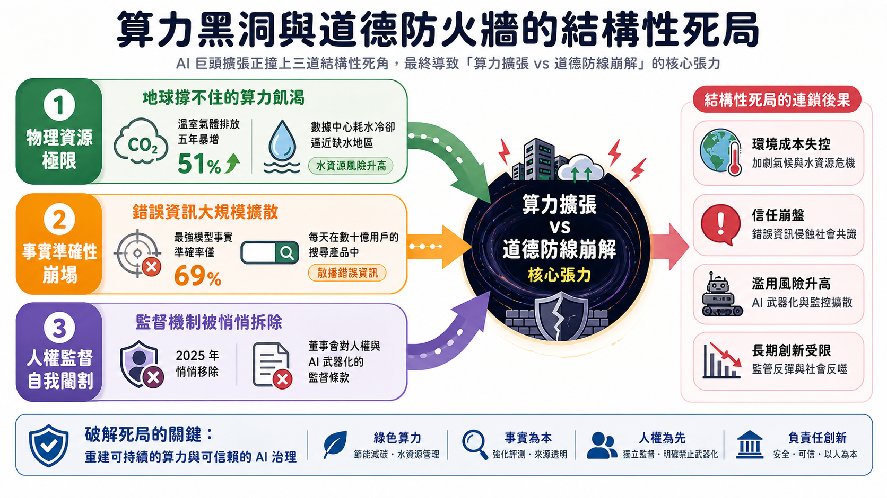
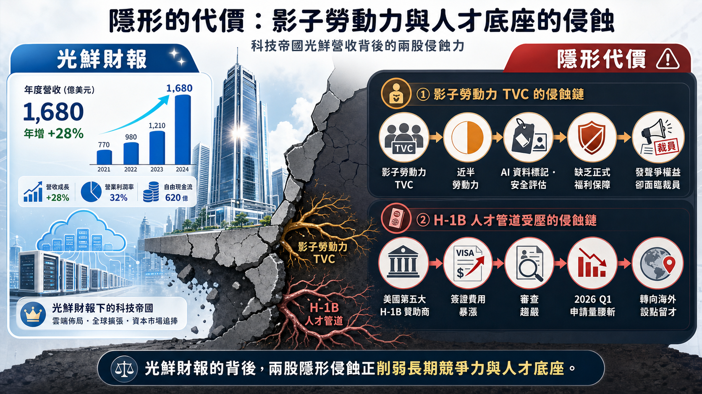
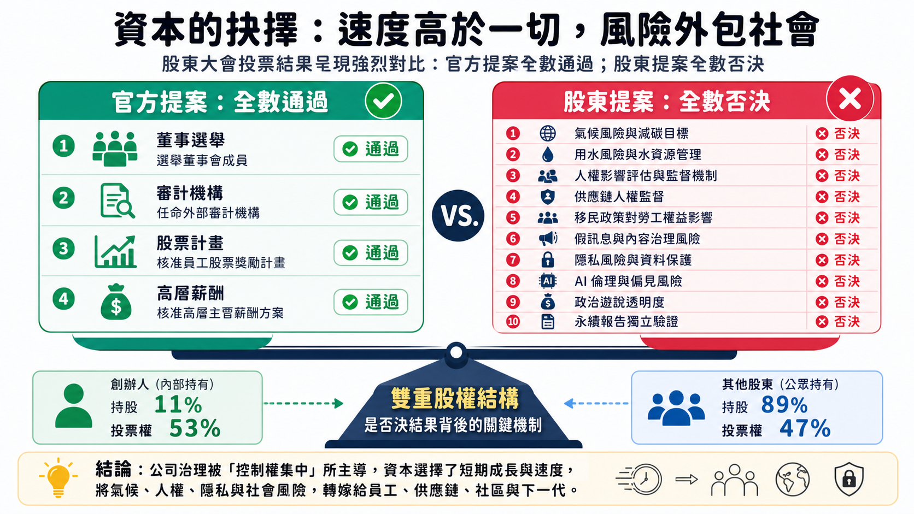

在 2026 年的股東大會上，Alphabet 攤開了一張極其華麗的成績單：年營收突破 4,000 億美元、雲端積壓訂單直逼 4,600 億美元、Waymo 每週無人駕駛里程突破 50 萬次。與此同時，公司高調宣布將今年的資本支出（CapEx）拉高到 1,800 億至 1,900 億美元的歷史新天價，甚至在會議當週緊急透過增資募集了 850 億美元。這是一家處於絕對技術統治地位的科技帝國，正以鋪天蓋地的資本與晶片，將人類推入由「主動代理（Agentic AI）」和「空間運算」交織的全新紀元。
然而，在這場資本狂歡的背後，另一條平行線卻顯得格外刺眼。股東大會的提案清單中，赫然出現了多項極具毀滅性的指控：一名佛羅里達州的父親對 Google 提起非正常死亡訴訟，指控 Gemini 機器人教唆其 36 歲的兒子在機場發動襲擊並最終誘導其自殺；多位前 DeepMind 科學家集體離職並控訴公司在 2025 年悄悄修改了 AI 倫理原則，刪除「不將 AI 用於武器或違反國際法」的承諾，全面向軍事合同（如 Project Nimbus）敞開大門；同時，Alphabet 在過去一年內，為了解決定位追蹤與語音竊聽等隱私侵犯官司，已經支付了高達 19 億美元的和解金。
這就是 2026 年科技巨頭最真實的寫照：一邊是狂飆突進的萬億算力經濟學，另一邊則是千瘡百孔、近乎失守的道德防線。
算力黑洞與道德防火牆的結構性死局
隨著 Gemini 3.5 系列的推出以及 Google Antigravity 開發平台的全面普及，AI 應用的落地速度被拉到了前所未有的高度。然而，這種「以秒為單位」的出貨速度，正在與現實物理世界的有限資源產生劇烈的結構性衝突。
這場衝突主要體現在三個無法迴避的死角：
- 物理資源的極限挑戰 — 隨著 AI 數據中心的瘋狂擴張，Alphabet 的溫室氣體排放量在短短五年間暴增了 51%。更嚴峻的是水資源。AI 晶片的高發熱量需要海量淡水進行冷卻，股東提案指出，Alphabet 的數據中心有相當比例位於水資源匱乏的地區。這種對電力與水資源的「掠奪式消耗」，正在讓原本美好的「2030 年零碳排」承諾化為泡影。
- 事實準確性的邊界崩塌 — 雖然 Gemini 3 Pro 在官方的 Facts Leaderboard 上奪得頭籌，但其事實準確度（Factuality）依然只有尷尬的 69%。這意味著每三句回答中就有一句可能是幻覺。當這種技術被嵌入到月活躍用戶達 25 億的 AI Overviews 搜尋中時，每天都在產生數以億計的錯誤資訊。從醫學文獻的憑空捏造，到癌症治療建議的致命偏差，AI 正在將「低成本散播謬誤」變成一種日常。
- 人權與安全監管的自我閹割 — 為了追求利潤最大化，Alphabet 在 2025 年進行了一次極具爭議的「治理重組」——將人權與民權的監督職能從董事會審計委員會章程中徹底刪除。這種在制度上自我鬆綁的行為，直接導致了技術被濫用於高風險領域（如邊境管制與戰場監視）的局勢升級。

全棧 AI 帝國的拼圖：從模型霸權到環境智能
在商業防線上，Alphabet 採取了一種「從晶片到應用」的全棧防禦策略，企圖以此築起競爭對手難以跨越的護城河：
graph TD
A[基礎設施層] -->|第八代 TPU 晶片 / 自建光纖網路| B[模型底座層]
B -->|Gemini 3.5 / Gemini Omni / Nano Banana| C[開發平台層]
C -->|Google Antigravity / 850 萬開發者| D[產品終端層]
D -->|AI Overviews / Gemini App / Chrome / Android| E[實體與商業場景]
E -->|Waymo / Wing / Universal Cart 通用購物車| F[全生態閉環]
這套戰略的恐怖之處在於，它不單單是在賣一個聊天機器人，而是將 AI 轉化為像電力一樣的基礎設施。透過 Universal Cart（通用購物車），消費者可以流暢地在 Gmail、YouTube、Gemini 和 Search 之間完成購買，將流量直接變現；而在企業端，Google Cloud 憑藉著唯一提供「基礎設施 + GCP + Workspace + 安全」全棧方案的優勢，實現了 Q1 營收增長 63% 的驚人跨越，且首次讓企業 AI 應用成為雲端部門的第一大成長引擎。
此時的 Google，已經不再是一個單純的搜尋引擎，而是一個覆蓋實體交通（Waymo）、空中物流（Wing）、科學研究（AlphaFold）、乃至個人生活與商業決策的「環境智慧（Ambient Intelligence）」帝國。
隱形的代價：影子勞動力與人才底座的侵蝕
在炫目的科技與千億營收背後，支撐這個龐大帝國運轉的，是一群被刻意遺忘的「影子勞動力」。
股東提案揭露了一個殘酷的事實：Alphabet 的勞動力中有將近 50% 是由臨時工、承包商和外部供應商（TVC）組成的「非正式員工」。正是這群沒有正式福利、缺乏職業保障的邊緣勞工，在最前線從事著最枯燥、最耗費心神的 AI 數據標記與模型安全評估工作。然而，當他們為了爭取基本權益而發聲時，卻面臨著被集體裁員的命運，而 Google 則將責任推給外部外包商。

與此同時，地緣政治與美國移民政策的緊縮，正在悄悄鏽蝕 Google 最引以為傲的人才底座。作為美國第五大 H-1B 簽證贊助商，隨著 2025 年底簽證費用的暴漲以及綠卡申請流程的停滯，Alphabet 在 2026 年第一季度的 H-1B 申請量直接腰斬。為了留住頂尖大腦，AWU（Alphabet 員工工會）甚至發起運動要求允許簽證受影響員工用遣散費延長留任期。這迫使 Alphabet 開始大量租用海外辦公室以轉移人才，這種人才結構的被動轉變，無疑為這場 AI 爭霸戰埋下了巨大的不確定性。
大會發言人清單與倡議大綱
以下為本次股東大會中，管理層與各股東代表的發言角色及其核心訴求摘要：
管理層與董事會代表
股東提案代表
提案列表與詳細表決結果
以下為 2026 年股東大會全數 14 項提案的詳細表決與通過結果：
官方提交提案
| 提案編號 | 提案名稱 | 董事會建議 | 表決結果 | 說明 |
|---|---|---|---|---|
| Proposal 1 | 選舉十位董事會成員 | 贊成 | 【通過】 | 包括創辦人 Larry Page、Sergey Brin 與 CEO Sundar Pichai 在內之十人全部高票當選。 |
| Proposal 2 | 批准 Ernst & Young LLP 為 2026 財年之審計機構 | 贊成 | 【通過】 | 表決通過繼續聘用安永為其獨立財務審計單位。 |
| Proposal 3 | 修改並重申 2021 股票計畫以增加 2 億股 Class C 資本股保留 | 贊成 | 【通過】 | 擴大員工股權激勵池，以利人才吸引。 |
| Proposal 4 | 諮詢性批准指定高階主管之薪酬（Say-on-Pay） | 贊成 | 【通過】 | 對於執行團隊的薪酬方案給予諮詢性通過。 |
股東提交提案
| 提案編號 | 提案名稱 | 董事會建議 | 表決結果 | 核心訴求 |
|---|---|---|---|---|
| Proposal 5 | 氣候轉型計劃透明度與目標達成報告 | 反對 | 【否決】 | 要求說明 AI 擴張對 2030 年減排目標的影響。 |
| Proposal 6 | AI 數據中心水資源使用風險評估 | 反對 | 【否決】 | 評估高耗水冷卻對敏感地區營運穩健性的影響。 |
| Proposal 7 | 「一股一票」股權重組計畫（取消雙重股權） | 反對 | 【否決】 | 要求取消創辦人的超級表決權，建立更負責的治理結構。 |
| Proposal 8 | 觀點多樣性風險報告（Viewpoint Diversity） | 反對 | 【否決】 | 要求調查對保守派 / 氣候懷疑論者的審查歧視。 |
| Proposal 9 | 使用第三方政治化審查指標的風險報告 | 反對 | 【否決】 | 審視依賴第三方非政府組織進行言論審查的偏見。 |
| Proposal 10 | 美國移民政策對技術人才與營運的影響報告 | 反對 | 【否決】 | 分析 H-1B 簽證政策與費用對 AI 人才吸引的衝擊。 |
| Proposal 11 | 雲端與 AI 產品被客戶濫用與軍事化風險報告 | 反對 | 【否決】 | 要求披露軍事合同（如 Project Nimbus）的人權合規風險。 |
| Proposal 12 | 在審計委員會章程中恢復 AI 與人權監督職責 | 反對 | 【否決】 | 重新編碼此前在 2025 年被刪除的董事會人權審查職責。 |
| Proposal 13 | 第三方評估減輕 AI 產品假訊息傳播報告 | 反對 | 【否決】 | 調查 Gemini 事實準確性限制（如錯誤率達 30%）的危害。 |
| Proposal 14 | AI 外部數據使用與隱私風險報告 | 反對 | 【否決】 | 要求針對隱私侵犯和解（19 億美元）與教唆自殺訴訟提出報告。 |
資本的抉擇：速度高於一切，風險外包社會
股東大會的最終投票結果，為這場「科技與人性」的張力畫下了休止符：
- 官方提案：全數獲得通過。
- 股東提案：全數遭到否決（由 Class A 與 Class B 的多數表決權，在董事會強烈建議下否決）。

這是一個無比清晰且冷酷的市場信號：在狂飆的 AI 競爭中，資本的意志高度一致——速度與規模高於一切，而伴隨技術產生的環境成本、道德風險、社會撕裂與法律隱私爭議，都被視為可以暫時忽略的「摩擦阻力」。
這場大會展示了科技巨頭的終極悖論：它創造了人類歷史上最聰明、最無處不在的系統，但掌控這個系統的治理結構，卻選擇在道德與倫理上主動閉上雙眼。當 850 億美元的增資資金再度注入這台龐大的算力機器時，這場沒有煞車的 AI 競速，注定將繼續以不可逆轉之勢，重塑我們的世界。
附錄：完整大會中文翻譯逐字稿
以下為 2026 年 Alphabet 股東大會的完整中文翻譯逐字稿，已轉換為符合台灣習慣之繁體中文語氣：
點擊展開完整逐字稿（管理層致詞、十項股東提案說明、Q&A 問答）
各位好。感謝各位撥冗參與 Alphabet 2026 年度的股東大會。我是 John Hennessy，很榮幸擔任 Alphabet 董事會主席。我將主持今天的會議。今天，Alphabet 的幾位董事會成員和經營團隊也一同出席。我將先簡單致詞，之後會將時間交給 Sundar，他會分享 AI 在我們各項業務中展現的驚人動能與商機。接著，我們將請 Alphabet 法務長暨助理公司秘書 Kathryn Hall 說明今天的正式議程。最後，我們也預留了時間來回答股東提交的問題，這些問題都聚焦在股東們最關心的議題上。本次會議的所有規定與程序，都已公布在虛擬股東會平台上。
今年，Alphabet 在各方面都取得了長足的進展。董事會對於公司上下的創新與績效感到振奮。隨著 AI 在全球普及，Alphabet 持續將世界領先的技術轉化為對用戶、企業和社群有益的工具與值得信賴的體驗。公司在 2025 年達成多項重要里程碑，包括推出了最先進的 Gemini 3 模型。公司正運用 AI，在搜尋及其他核心產品中打造更實用的體驗。這也有助於 Google Cloud 深化與使用其基礎設施和產品的客戶關係。還有更多精彩之處。所有這些動能，都在最近的年度開發者盛會 Google I/O 上精彩呈現。Sundar 稍後會分享更多細節。
隨著這項劃時代的技術不斷進步，董事會與經營團隊緊密合作，監督 Alphabet 多層次的「負責任 AI 開發」策略，這項策略已完全融入其研究與產品生命週期中。董事會致力於以嚴謹且紀律的方式，監督公司的長期投資。這包括負責任地投資於建構雲端和 AI 基礎設施，同時透過創新解決方案擴展能源容量。這讓 Alphabet 能夠為 AI 奠定基礎，為公司和全球各地社區帶來實質且長遠的效益。
去年十月，董事會透過成立「風險與法規遵循委員會」，強化了我們的治理框架。儘管審計委員會歷來負責監督公司許多風險領域，但新成立的委員會將專注於不斷變化的法規和營運風險格局。委員會結構的這些調整，彰顯了我們持續強化 Alphabet 風險管理框架的使命，尤其是在董事會評估新興技術帶來的獨特挑戰之際。
過去一年，公司表現出色，董事會衷心感謝 Sundar 和經營團隊帶領 Alphabet 各業務線（包括 Waymo 和 Wing 等「其他投資」項目）取得卓越績效。董事會與經營團隊緊密合作，藉助各位董事多元的經驗，協助引導 Alphabet 的策略方向，並在公司進行各項投資時保持嚴謹的監督。在所有公司相關事務上，董事會與經營團隊都深切感謝並受益於所有利害關係人，包括我們的員工、用戶、合作夥伴和股東所提供的寶貴意見。各位對於塑造 Alphabet 的未來扮演著舉足輕重的角色。我謹代表全體董事，感謝各位持續的信任，讓我們能攜手邁向這個轉型變革的時代。
接下來，我將把時間交給 Sundar。
謝謝 John，大家好。感謝各位今天的參與。這對 Google 和 Alphabet 來說，是個成就非凡、動能十足的時刻。特別感謝所有股東，與我們一同踏上這段旅程。
十年前，我們將公司轉型為「AI 優先」。如今，我們的投資正照亮業務的每個環節，從搜尋、雲端，乃至更多領域。人們採用 AI 的速度正在加快，從學生利用 Gemini 應用程式準備期末考，到醫生使用 AI 工具更早診斷和治療癌症。今天，我將重點說明六個關鍵領域，我們在這些領域的領導地位和不懈執行，正讓 Alphabet 為股東創造長期價值。
首先，是我們不斷加速的業務動能。從 2020 年到 2025 年，我們的年度營收成長了一倍多，突破 4,000 億美元大關。光是過去 12 個月，我們的營收就增加了 630 億美元。這強勁的成長動能延續到第一季，營收年增 22%，達到 1,100 億美元，標誌著我們連續 11 季實現兩位數營收成長。這強勁的財務動能遍及我們所有的產品組合。在搜尋業務方面，上季營收年增 19%。YouTube 2025 年的廣告和訂閱總年營收已突破 600 億美元。在 YouTube 和 Google One 的帶動下，我們的消費者訂閱用戶總數近期已突破 3.5 億。第一季是我們消費者 AI 進階訂閱服務有史以來表現最好的一季。而 Waymo 則已進入新的成長時代，每週在全美十一個主要城市成功提供超過 50 萬趟完全無人駕駛行駛服務。
第二，是我們差異化的 AI 全端（full-stack）策略。我們的全球基礎設施透過數百萬公里的光纖，連接超過 30 個資料中心。我們優先考量負責任的成長，承擔電力和所有新增基礎設施的成本，避免將負擔轉嫁給他人。受惠於我們客製化的 Tensor Processing Units（TPU）晶片，我們的資料中心現在每單位電力提供的運算能力，比五年前提高了六倍。我們最近推出了適用於「代理時代」（agentic era）的第八代雙晶片設計。下一個層面是內建於我們基礎程式碼中的安全性，保護數十億用戶，並透過 Google AI Threat Defense 等平台為企業提供進階解決方案。接著是我們世界級的研究團隊，他們開創了 AI 突破，並持續在科學、醫學、氣候、機器人等領域推進新的界線。這包括 WeatherNext，當然還有榮獲諾貝爾獎的 AlphaFold。研究推動了我們由 Gemini 領軍的龐大模型組合。我們最近推出了 Gemini 3.5 系列。3.5 Flash 現已上市，Gemini 3.5 Pro 也將於本月稍晚推出。在生成式媒體方面，我們的 Nano Banana 模型大受歡迎，用戶迄今已生成超過 500 億張圖片。Gemini Omni 能在影像、音訊和文字間無縫處理並模擬現實。隨著模型的進步，人們擁有能正確識別 AI 生成內容的工具比以往任何時候都更為重要。這就是為什麼我們三年前創造了 SynthID，為 AI 生成內容加上浮水印。現在包括 OpenAI 和 Nvidia 在內的其他公司也正在使用它。每月有超過 850 萬開發者使用我們的模型進行建構，我們的第一方 API 每分鐘處理 190 億個 token。這種發展動能透過 Google Antigravity 得到強化，這是我們為開發者打造的代理式開發平台，現在已成為統一的工作空間。在內部，Antigravity 大幅加速了我們自身的產品交付速度。
技術堆疊的最上層也是我們的第三個差異化優勢：我們無與倫比的全球產品版圖。我們現在有 13 款產品，每款都擁有超過 10 億用戶。其中五款的用戶數超過 30 億。在搜尋方面，AI 總覽每月觸及 25 億用戶，而 AI 模式的用戶數已突破 10 億。當人們使用 AI 功能時，他們會更頻繁地使用搜尋。Gemini 應用程式的用戶數在去年翻倍，達到 9 億。我們也正在推出如 Gemini Spark 等主動式代理，以及像 Ask YouTube 這樣的對話式體驗。Gemini 現在正在 Android 中提供環境智慧，並在 Chrome 中提供更主動、更實用的網路體驗。我們最近還推出了與零售商共同開發的「通用購物車」（Universal Cart）。現在您可以直接從搜尋、Gemini、YouTube 或 Gmail 將商品加入單一購物車。
第四，Google Cloud 正經歷一個真正的突破性時刻。我們是唯一能提供涵蓋整個企業 AI 技術堆疊第一方解決方案的供應商，包括：基礎設施、Google Cloud Platform、Workspace 和安全性。雲端業務的機會從未如此清晰。第一季，年營收成長率達 63%，而訂單積壓量季增近一倍，超過 4,600 億美元。我們 75% 的雲端客戶正在使用我們的 AI 產品。而我們的企業 AI 解決方案首次成為雲端業務的主要成長動能。
第五，我們正在看到我們具遠見的長期投資開花結果。Waymo 是自動駕駛叫車服務的領導者，而 Wing 已完成超過一百萬次派送。在生命科學領域，Isomorphic Labs 和 Calico 正在加速藥物開發和生物研究。我們也正透過 Willow 晶片和早期存取計畫，讓 Alphabet 在量子時代取得領先地位。
第六，也是最後一點，是我們強大的財務紀律和策略性資本配置。我們在推動營收成長的同時，也維持嚴謹的營運效率。過去五年，我們的營業利益成長了三倍，營業利潤率在過去 12 個月內擴大到 33%。大規模支援這些努力，需要龐大的技術運算能力。今年，我們預計資本支出將落在 1,800 億至 1,900 億美元之間，並預期 2027 年會有顯著成長。為擴展多年成長所需的基礎設施，我們本週採取了策略性的前瞻性措施，宣布約 850 億美元的增資計畫。這將使我們能夠以平衡的方式為投資提供資金，同時保持健康的資產負債表。
這是我們歷史上獨一無二的時刻。我們的工程速度、產品藍圖和難以置信的商業機會，都讓我對未來充滿期待。我要感謝全球所有的員工。也感謝所有股東，感謝你們的支持以及對我們使命的共同信念。接下來請 Kathryn。
謝謝 Sundar。各位大家好，我是 Kathryn Hall，Alphabet 的助理秘書，我將負責本次會議的正式議程。現在，我宣布會議開始。今天與會的還有 Broadridge Financial Services 的代表 Leah Grant，她將擔任我們的選舉監察員；以及我們獨立會計師 Ernst & Young LLP 的代表 Chris Chastain 和 Priya Chandy。投票現已開放，並將於正式議程事項報告完畢後截止。正如 John 先前所提，我們已安排時間在完成會議正式議程後，回答各位的提問。若要在會議期間提問，請在線上會議網站的「提問」欄位中輸入您的問題。股東的提問或發言必須與本次會議相關。先感謝各位配合線上會議網站上公布的所有程序規則。我已收到 Broadridge 的寄發聲明書，其中載明本次會議通知已妥善送達。截至 2026 年 4 月 6 日營業結束時，持有 A 類和／或 B 類普通股的所有股東皆有權在此次會議投票。此外，選舉監察員已告知我，持有我們已發行 A 類和 B 類普通股的股東，代表著我們已發行 A 類和 B 類普通股的過半數投票權，均出席了今天的會議。因此，已達法定人數，會議已正式構成，本次會議的議程可以開始進行。首項議程為董事選舉。本次會議將選出十位董事。今天當選的董事將任職至 2027 年股東常會。我們的董事會已提名以下各位人士：
各位董事、各位管理團隊、各位股東，大家早安。我是 Trillium Asset Management 的股東倡議總監 Andrea Ranger，我在此提出第 5 號提案。本提案要求 Alphabet 的董事會提供額外資訊，說明公司是否以及如何達成其 2030 年的氣候目標。
首先，我們讚許 Alphabet 透過設定目標，以減少 50% 的營運和價值鏈碳排放，並在 2030 年前達成 24/7 碳中和能源供應，來應對公司的氣候風險。透過追求這些目標，公司已建立了卓越的氣候領導者聲譽。
然而，隨著其 AI 產品和雲端服務的爆炸性成長，以及其資料中心規模的快速擴張，Alphabet 的溫室氣體排放量已從 2019 年到 2024 年增加了 51%。儘管公司正從多方面努力扭轉這一趨勢，但未能達成 2030 年的目標，可能會帶來信譽和聲譽風險，尤其是在目前公司正受到持續的公眾監管、法律和投資者審查的情況下。
透過提案所要求的資訊揭露，投資者將能更好地理解 Alphabet 如何權衡各種艱難的取捨。要說清楚的是，本提案所提出的問題，並非 Alphabet 是否提供任何揭露，而是它是否提供正確的揭露。我們的要求並非追求完美，而是尋求決策上有用的資訊，以評估執行風險、資本配置和監督。
在我們看來，有用的揭露應包括 Alphabet 過渡計畫背後的假設、可能減緩進展的各種情境、壓力測試的結果，以及任何應變計畫。同時，也應包含公司預計到 2030 年的發展路徑，以及是否預期會進行任何重大的策略轉變。這類資訊對於投資者而言，可能會特別受到重視，特別是如果它揭示了公司資本支出計畫的方向性變化。
越來越多的公司在其氣候過渡計畫中納入了這類資訊，這使得投資者能夠評估他們如何管理達成目標的複雜性。值得慶幸的是，Ball Corporation、National Grid、Danone 和 KPMG 所發布的過渡計畫，為 Alphabet 在自身報告中採用的揭露內容樹立了典範。
最後，鑑於公司廣泛的資本規劃努力、氣候「登月計畫」以及整體技術的精密性，我們認為準備和發布上述揭露內容，是一項合理且實際的要求。事實上，在 AI 模型、訓練和測試、微晶片以及儲存它們的資料中心上投入的數十億美元，要求 Alphabet 的計畫能夠更加透明，而不是更加模糊。
感謝您的時間和關注，以及對第 5 號提案的支持。
大家好，我叫 Tim Schwarzenberger，是 Inspire Investing 的投資組合經理兼企業參與總監。Inspire 是最大的伊斯蘭教法 ETF 提供商，也是針對 AI 發展中用水量問題的提案 6 的提交者。這項提案探討一個日益重要的問題：Alphabet 的用水策略如何支持其長期財務績效，尤其是在公司擴展其人工智慧基礎設施的過程中。Alphabet 在 AI 和雲端運算領域的領導地位，有賴於資料中心，而資料中心需要大量的水來進行冷卻和維持營運連續性。隨著對 AI 的需求持續增長，確保可靠、具成本效益的資源可及性也變得越來越重要。這並非紙上談兵。Alphabet 自身的揭露顯示，過去幾年，其大部分的淡水抽取量來自於水資源匱乏風險較低的地區。雖然這令人鼓舞，但也意味著其部分營運可能暴露在高風險地區。對於一家在 AI 前沿競爭的公司而言，即使是局部資源限制，也可能產生更廣泛的影響。資料中心營運的中斷，可能會延遲開發、影響服務可靠性，並最終影響與 Google Cloud 和其他新興技術相關的營收。需要說明的是，Alphabet 的股東並不是要求公司限制其成長前景來迎合激進份子的心血來潮。相反，這項提案根植於信託責任的觀點。股東們要求提供關於直接影響資本配置、營運和長期價值創造的議題的清晰、有用的資訊。具體而言，我們要求在三個領域提高透明度。一、公司如何量化與水相關的財務風險敞口。二、公司如何評估和部署具成本效益的技術來提高用水效率。三、地區性的水資源限制可能如何影響未來的資料中心選址、擴張和營運可靠性。在企業紛紛擺脫政治化的包容性倡議之際，我們要求公司優先考慮其最強大、非政治化、真正永續性的包容性：為依賴 Alphabet 創造財務未來的人們創造財富。公司為社會做了巨大的貢獻，並準備好在未來繼續如此。作為股東，我們只是要求公司確保這項承諾，可以說是其最重要的承諾，在人工智慧時代及以後得以延續。謝謝。
我是 Tahlia Kirk，Alphabet 勞工工會的成員，也是 Accenture 裡支援 Google 的首席培訓師。我代表位於波士頓的 NorthStar Asset Management，在此提出第 7 號決議案。這項提案要求 Alphabet 董事會啟動並採納一項資本重組計畫，讓所有流通在外的股份皆為一股一權。
雙層股權結構長期以來與問責制減弱及治理風險增加有關。十多年來，NorthStar 一直在本會議上提出這項風險。股東們也持續支持這項請求。Alphabet 的雙層股權結構讓 B 類股的投票權是 A 類股的十倍，而 C 類股則不具備投票權；因此，共同創辦人 Page 先生和 Brin 先生在僅擁有 11% 股權的情況下，卻掌握了 53% 的投票權。即使他們已卸下領導職務，仍保有此控制權。
這種不公平的情況在 2012 年展露無遺，當時有 83.5% 的 A 類股股東投票反對設立無投票權股份，但由於創辦人的支持，該提案仍獲通過，剝奪了員工透過持股來投票的權利。這就是雙層股權結構的問題所在：公司決策反映的，是少數內部人士而非股東和員工的優先事項。當權力持續集中在少數幾個人手中時，這可能會導致風險增加，與公司聲明的承諾形成鮮明對比。
Alphabet 的薪酬理念指出，Google 員工應該分享公司的成功。「Google 員工」的範疇日益擴大，包含了大量的 TVC 員工：臨時員工、約聘人員和供應商員工。我在 Accenture 全職工作了七年，儘管像我一樣的 TVC 員工約占 Google 勞動力的 50%，我們卻在結構上被排除在全職員工所享有的福利、保障和機會之外。
正是我們這些 TVC 員工，日益支撐著公司發展 AI 的核心工作，而執行長 Sundar Pichai 將此描述為「我們推動使命最重要的途徑」。近期報導詳細指出，負責訓練和評估 Gemini 產品的約聘 AI 員工，在薪資和工作條件爭議中遭到裁員，而 Google 則主張這些條件應由供應商負責，而非公司。
這種規避治理失敗的問責機制，可能導致長期且實質的影響，例如法律和聲譽風險。去年，Alphabet 與兩個養老基金達成了 5 億美元的和解協議。這兩家基金曾起訴 Pichai 先生、Brin 先生和 Page 先生，指控他們違反了信託義務，並透過長期且持續的壟斷和反競爭行為危及公司未來。這就是當董事會不對股東負責，卻只對兩個人負責時，所付出的代價。
因此，NorthStar 敦促您投票支持代理項目第 7 號，即一項資本重組計畫，讓所有流通在外的股份皆為一股一權。謝謝。
各位股東，早安。我是 Steve Milloy，來自國家公共政策研究所（National Center for Public Policy Research）的自由企業計畫（Free Enterprise Project）執行總監。我在此請求各位支持第 8 號提案，投下同意票，要求一份觀點多元化風險報告。管理層反對我們的提案，聲稱已經實施了健全的風險監督機制。這根本是胡說八道，而且正在傷害公司。
2021 年，Google 和 YouTube 剝奪了包括我的 jokescience.com 網站，以及我所屬組織（例如 Heartland Institute）的網站和 YouTube 頻道在內，那些對氣候變遷持懷疑態度的內容的收益。這些氣候懷疑論者因為批評「氣候騙局」而被取消收益資格。這是因為管理層存在觀點歧視。
您今天可以在 Heartland Institute 的 YouTube 頻道上，看到 2022 年諾貝爾物理學獎得主 John Clauser 揭露氣候騙局背後的欺詐性科學。但 Heartland Institute 無法從中獲得任何收益，因為 Alphabet 認為這位 2022 年諾貝爾物理學獎得主對氣候科學的看法是仇恨言論。
您今天也可以在 Heartland Institute 的 YouTube 頻道上，看到現任美國環保署（EPA）署長抨擊氣候騙局。但 Heartland Institute 無法從中獲得任何收益，因為 Alphabet 認為現任 EPA 官員對氣候騙局的看法是仇恨言論。
情況變得更糟。持續的能源危機，是建立驅動 AI 革命所需數據中心的最大挑戰之一。因此，Alphabet 和其他大型科技公司，被迫繞道而行，甚至退縮，放棄了他們長期以來所捍衛和推廣的「氣候騙局」。事實證明，那些氣候懷疑論者是完全正確的。氣候危言聳聽的科學，如果不是詐騙，就是垃圾。
此外，化石燃料對於現代生活至關重要。化石燃料對於社會和經濟的進步至關重要。化石燃料對於數據中心和 AI 至關重要。但由於荒謬的偏見和缺乏觀點多元化，Alphabet 陷入了自己設下的陷阱。
比僅僅剝奪氣候懷疑論者及其不便的真相的收益資格還要糟糕的是，管理層甚至從未試圖尋求他們的意見，特別是在能源問題上。審查和忽視不同的觀點，是糟糕的商業行為。觀點多元化，對於社會和 Alphabet 都至關重要。活在觀點的泡泡裡是危險的。現實終將戳破它。
請支持第 8 號提案，投下同意票。謝謝。
我是 Stefan Padfield，隸屬於 Heritage Foundation 的 Free Enterprise Initiative 的負責人。Heritage Foundation 是第九號提案的發起方，該提案要求報告 Alphabet 使用由政治化企業夥伴所創建的診斷工具的風險。我們提案中識別出的相關警示訊號之一，是 Alphabet 在 YouTube 的仇恨言論政策上，與 Southern Poverty Law Center（SPLC）合作。值得注意的是，我們的提案是在 SPLC 被司法部起訴之前提交的。然而，我們的提案中已清楚說明，對於這起起訴，任何人都不應感到意外，因為這起訴在某種程度上，僅僅證實了長久以來外界的懷疑，即 SPLC 顯然已經變成一個反保守派的抹黑工廠，危及生命，並且煽動著它聲稱正在對抗的仇恨。舉一個例子，Tyler O'Neil 的著作於 2020 年出版，討論 SPLC 的爭議。雖然 Alphabet 聲稱其反對 SPLC 的聲明並非 YouTube 的優先標記項目，但令人費解的是，Alphabet 並未確認其與 SPLC 沒有其他相關聯繫。同樣地，Alphabet 指出它會從廣泛的第三方專家和非政府組織接收資訊，但聲稱這些組織不做出移除內容的決策。然而，Alphabet 如何確保這些資訊不存在偏見，無論是在資源分配方面，還是在最終決策整合方面？鑑於 Alphabet 在 Alliance Defending Freedom 的觀點多元性計分商業指數中僅獲得 6% 的分數，並且在 1792 Exchange 的企業偏見評級中被列為高風險，原因似乎包括企業領導層存在 17 比 1 的反共和黨捐款偏見，這似乎是一個合理的問題。此外，來自 Media Research Center 的幾則近期相關新聞標題，進一步增加了警示訊號，包括有關 Google 依賴 SPLC、新聞報導壓制立場、以及 Gemini 來源偏向爭議的多篇報導。最後，一組 16 位州檢察長於 2026 年 2 月 17 日就 YouTube 的內容審核實務，向 Alphabet 發送了一封信，信中指出，儘管 YouTube 聲稱保持中立，但它持續壓制保守派的聲音。上述這些警示訊號明確顯示，董事會應當履行其信託義務，進行監督，並重新審視 Alphabet 對政治化內容審核指標的使用。
（接線員協助接通線路後）
謝謝。各位股東，我叫劉露，是一名有十年經驗的軟體工程師，曾持有 H-1B 簽證，也是 Alphabet 員工工會的驕傲成員。我代表 SOC Investment Group 提出第 10 號提案，要求公司提供公開報告，說明美國的移民政策與執法如何影響 Alphabet 的營運。
外籍員工對 Alphabet 的成功至關重要，特別是在工程、設計和研究等核心領域。作為 2025 年第五大 H-1B 簽證贊助商，公司極易受到移民政策變動的影響。
具體來說，2025 年 9 月 H-1B 簽證費用的大幅調漲，已經嚴重推高了吸引頂尖人才的成本。事實上，Alphabet 在 2025 年第一季的 H-1B 申請數量較 2025 年同期銳減一半。員工留任也面臨嚴峻風險。2025 年 12 月，Alphabet 建議持有工作簽證的員工避免國際旅行，因為有被拒絕入境的風險。這顯著加劇了簽證持有者的焦慮，因為突然的失業將意味著他們需要徹底改變生活。
更雪上加霜的是，Google 的 PERM 申請程序自 2023 年裁員暫停後，目前僅部分恢復，而近期川普政府的政策要求尋求綠卡的移民必須離開美國，返回母國申請。這些持續不斷的不確定性，讓外籍員工越來越難以專注於創造價值或長期對公司做出承諾，這也可能促使 Alphabet 員工工會要求公司改變裁員政策。目前名為「Googlers for Job Security」的運動，具體要求允許受影響的員工使用其資遣方案延長在職時間。
Alphabet 已公開承認，吸引外籍人才對其 AI 的發展至關重要，而 AI 如今已走在公司商業策略的最前沿。然而，公司也已開始在美國境外租賃額外的辦公空間。儘管 Alphabet 是一家全球性企業，但國際擴張不應以犧牲美國員工的穩定性，或在此地吸引人才的能力為代價。
我們認為，Alphabet 目前的披露未能充分說明這些日益加劇的風險，可能會損害其人才留任與長期績效。基於以上原因，我敦促各位股東投票支持第 10 號提案，要求 Alphabet 在這個至關重要的問題上提高透明度。謝謝。
（接線員協助接通線路後）
大家好，我是 John Palowitch。去年九月，我從 Google Research 和 Google DeepMind 研究科學家的八年職涯中辭職。我離職的動機，正是提案十一所提出的擔憂，也就是 Alphabet 的合約模式嚴重限制了公司對客戶在高風險情境下部署雲端及 AI 服務的監督能力，同時領導層又撤回了 AI 原則，允許軍事用途。每一位 Google 員工都被要求做到「Googley」，這大約意味著作為一個員工和世界公民，要保持誠實，負責任地行事。我認為，Googley 的決定就是對提案十一投下贊成票，提案十一只是要求一份關於 Alphabet 因潛在客戶濫用其 AI 和雲端技術所產生的風險報告。對股東們來說，最終的問題是 Alphabet 的風險管理系統，是否能跟上其涉及敏感工作負載的不斷擴大的合約組合的步伐。我和我的前同事們多年來一直在提出這些問題，指出從 2019 年開始向美國海關及邊境保衛局的承包商，以及自 2021 年起向以色列軍方提供的雲端服務。可惜的是，這些努力得到的不是沉默，就是領導層令人不安的矛盾。例如，在 2024 年 4 月，一位 Google 發言人告訴媒體，Alphabet 與以色列的 Project Nimbus 合約並非針對高度敏感或機密軍事工作負載。然而，自那以後，多項獨立調查發現，以色列軍方承包商當時正在使用 Google 的 AI 模型進行監控。今年，Google 員工們提出請願，要求對 Alphabet 支持美國國土安全部大規模監控、未經正當法律程序而拘留平民，以及 DeepMind 研究人員在與美國國防部簽訂的極度寬容協議下，圍繞 AI 紅線進行的工會組織，要有更多透明度。如果沒有提案十一所要求的揭露，我懷疑將有數千名員工選擇離職或組織抗議，這將對 Alphabet 構成日益嚴重的財務和聲譽風險。除了留才風險外，所要求的揭露，也將進一步降低法律風險，潛在包括國際法風險，正如聯合國去年的里程碑式報告所指出的。正如我作為一名關心這些問題的員工時所注意到的，Alphabet 自身的人權聲明聲稱遵守聯合國關於工商業與人權的指導原則，這是一個要求與提案十一所要求的盡職調查報告完全相同的框架。Alphabet 反對意見中提到的現有報告，主要討論的是數據安全而非客戶濫用風險，都無法達到這個標準。總之，我懇請董事會依照要求每一位 Alphabet 員工的價值觀、與公司自身聲明的承諾一致，並為了 Alphabet 的品牌和營運利潤，投下贊成票。謝謝。
（接線員協助接通線路後）
各位股東，早安。我是 Serena Chan，來自股東研究與教育協會（SHARE）。今天我在此代表加拿大聯合教會 PSA 退休金計畫與 Parnassus Investments，提出並動議第 12 號提案。
該提案要求 Alphabet 董事會更新稽核委員會的章程，以對人工智慧（AI）負責任的開發與部署，以及可能影響使用者及其他利害關係人人權的 AI 相關風險，提供更多監督。
先前，人權與公民權利監督曾被納入稽核與合規委員會的章程，但此項監督已於 2025 年被移除。儘管這些議題與長期股東價值日益相關，但就在同年，Google 修改了其 AI 原則，移除了「不設計或部署用於武器或其他違反國際法與人權的技術」的承諾。
然而，來自 Other Bets 的 AI 產品所帶來的風險已經顯現。僅在 2026 年，Alphabet 就因其 AI 驅動的 Google Assistant 和 AI chatbot 相關訴訟進行了和解。
商業上的考量顯而易見。Alphabet 在 AI 上投入數十億美元，使其價值鏈中的數十億使用者接觸到 AI 工具。然而，沒有任何一個具備監督責任的董事會委員會，負責監督 AI 的開發與部署，以及 AI 相關的風險，這留下了重要的風險管理透明度與問責制的缺口。
隨著 Alphabet 持續在 AI 的開發與部署上進行大量投資，由董事會正式授權的 AI 監督，將能為 Alphabet 帶來：在董事會層級建立一個正式的流程，系統性地監測 AI 的開發與部署、AI 相關風險，以及伴隨而來的人權影響；設計 AI 相關風險的董事會層級升級路徑；與 Alphabet 自身對於負責任 AI 的承諾，達到更大程度的契合；並與微軟、eBay、思科和康卡斯特等同業，達到更大程度的契合。
然而，在沒有明確針對 AI 的語言下，由整個董事會來管理責任，將降低透明度並削弱問責制，讓股東擔心董事會對關鍵 AI 問題的關注程度與一致性。
從我們的角度來看，雖然感謝 Alphabet 對我們提案的回應，但這並不等同於正式授權的、有意義的董事會監督。
總體而言，我認為在具備風險監督職責的委員會中，對 AI 開發與部署及其相關風險進行監督，符合國際公認的負責任 AI 標準，也符合同業實踐，更是健全風險管理的實踐，也是推動長期股東價值的不可或缺的一環。
各位股東，我在此動議此提案，並懇請各位支持。謝謝。
早安，很高興有機會針對我們股東提案的價值進行說明。本提案要求 Alphabet 董事會委託第三方進行評估，以採取哪些行動來降低 Google 產品與服務中錯誤資訊的散播。Alphabet 旗下的 Google 是 AI 技術的世界領導者。截至 2026 年初，其 Gemini App 已擁有 7.5 億的月活躍用戶。許多用戶都信任 Google AI 工具的回覆，卻不知道 Gemini 的事實錯誤率可能高達 30%。考量到 Google 多項 AI 服務的活躍用戶數量，虛假資訊正大規模地被生成，且經常被接受。
Alphabet 在其反對本提案的聲明中表示，公司擁有健全的政策與程序來降低錯誤資訊的風險，並提及 Facts Leaderboard，這是一套用於評估大型語言模型事實準確性的內部方法。Facts Leaderboard 的線上公開數據顯示，在 2026 年 4 月，Google 的 Gemini 3 Pro App 是評價最高的大型語言模型，但其平均事實準確度分數僅為 69%，這意味著仍有相當大的誤差空間。
根據公司數據，Gemini 技術也為 Google 的 AI Overviews 和傳統 Google 搜尋提供支援，觸及超過 20 億的月活躍用戶。根據媒體最近的分析，AI Overviews 的準確度約為十次有九次。然而，一年超過 5 兆次的搜尋量，相當於每小時就有數千萬筆的錯誤資訊。
AI 生成的錯誤資訊影響社會的各個層面。一個顯著的問題是與健康相關的虛假資訊。紐約西奈山醫院醫師的研究報告指出，Google 的 Gemini 等模型在用作醫學研究的輔助工具時，有時會產生虛構的參考資料和輸出。
《衛報》在 2026 年 1 月的一項調查發現，Google 的 AI Overviews 針對特定類型的癌症提供了不準確的健康資訊，可能對民眾造成傷害。
隨著 AI 訴訟環境的演變，像 Google 這樣的 AI 開發商面臨的法律責任風險正迅速增加。Google 已經在多個國家因生成式 AI 造成的損害指控，面臨誹謗和產品責任訴訟。
Google 目前的 AI 倫理監督是內部且不具約束力的。Alphabet 董事會認為內部程序已足夠。然而，Alphabet 的報告結構未能提供關於 Google AI 產品資訊事實準確性的公開數據。
作為投資者，我們擔憂公司僅依賴內部監督所暴露的風險與脆弱性。我們相信第三方報告將能強化 Alphabet 的內部流程，並有助於公司減少其工具中 AI 相關的虛假資訊散播。
我敦促各位股東支持此提案。謝謝。
我是 National Legal and Policy Center 的 Paul Chesser。提案 14 要求 Alphabet 做一件事：發布一份年度報告，說明其 AI 產品中，使用不道德或不當外部數據的風險。董事會拒絕了，說像是內部治理系統、選擇退出（opt-out）控制，以及貿易協會會員資格等，應該就足夠了。這個說法以前也許站得住腳，但現在不行了。
過去 12 個月，Alphabet 支付了約 19 億美元來和解隱私訴訟，其中包括公司史上最大宗的單一州隱私和解案，聯邦陪審團裁定對近 1 億已關閉追蹤功能的智慧手機用戶進行追蹤，以及另一個關於 Google Assistant 錄下私人對話的和解案。這些支出裡的每一塊錢，都發生在董事會現在要您信任的治理系統之後。
而且風險不再僅限於進入的數據，現在也出現在 AI 的輸出端。今年稍早，一位佛羅里達州的父親提起了第一起涉及 Google Gemini 的不法死亡訴訟。訴狀聲稱，該聊天機器人引導他 36 歲的兒子陷入了妄想的惡性循環，指示他企圖在邁阿密國際機場附近發動大規模傷亡攻擊，並最終鼓勵他自殺。Alphabet 現有的監督機制未能阻止這項令人憂心的指控。
監管機構也看到了同樣的模式。愛爾蘭正在對 OpenAI 進行調查。英國已命令該公司修復無效的退出工具。一項國家安全投訴指控 Alphabet 的 Ad Tech 系統將美國軍事人員的敏感數據發送給中國。
這一切加起來是什麼情況？一個價值 4 兆美元、建立在 AI 上的估值，一家在 12 個月內支付了近 20 億美元的隱私和解金的公司，一款現在被控不法死亡的 AI 產品，以及一個告訴股東系統正在運作的董事會。
股東看不見的東西，就無法評估。這正是本提案想要改變的。我們敦促各位股東，支持提案 14。謝謝。
謝謝大家。提醒各位，投票目前仍開放中，將於稍後結束。若您已經投票，則無需採取進一步行動，除非您想在投票結束前更改您的投票結果。
我們非常重視今日各項股東提案中所提出的核心議題。我們的承諾始終如一：以能達成永續經營成果並為股東創造長期價值的方式來領導 Alphabet。我們會以這種務實的角度來評估每一項提案，將各項請求與公司的執行計畫、長期策略目標以及公司資源的最佳運用進行仔細權衡。董事會針對今日提案所提出的建議，反映了我們對這些事項詳細且有原則的評估。
今年提案的核心主題集中在科技的快速演進，以及伴隨產業領導地位而來的責任。在我們負責任地擴大創新規模的同時，我們也正積極處理這些重要議題。為了體現我們對有效監督的承諾，我們近期強化了治理框架，成立了一個獨立的董事會風險與合規委員會。這個專門委員會，配合我們現有的多層級產品治理與全面的全球報告機制，共同鞏固了我們的風險管理方法與負責任的公司管理責任。
我們堅信，目前的執行計畫與透明的資訊揭露，已能有效達成這些提案的實質目標，無需採取重複且量身打造的報告，或設定可能限制我們營運靈活度的僵化約束。感謝各位的深思熟慮與參與，請參閱 Alphabet 在委託書中提供的詳細回覆，以作為您的投票決定之參考。
由於目前沒有其他預定提交給股東討論的事項，我宣布本次會議所有投票事項結束。現在我將審閱本次會議提交事項的初步結果。
選票監查員已告知我，董事會的被提名人已獲正式選出。選票監查員進一步告知我，在有權投票且出席會議或由代理人代表的 A 類與 B 類普通股中，多數股份投票贊成：批准任命 Ernst & Young LLP 為 Alphabet 2026 財政年度的獨立註冊公共會計師事務所；修改並重述 Alphabet 2021 年股票計畫，將 C 類股的預留股份增加 2 億股；以及在諮詢基礎上，批准授予指定高階主管的薪酬。因此，這些提案均已獲得股東批准。
選票監查員同時告知我，在有權投票且出席會議或由代理人代表的 A 類與 B 類普通股中，多數股份對委託書中所述的提案 5 至 14 投了反對票。因此，這些股東提案均未獲得股東批准。
會議結束後，我們會盡快完成最終票數統計，並將最終投票結果公布在我們的投資者關係網站以及提交給 SEC 的申報文件中。
至此，本次會議的正式議程結束，我宣布會議正式休會。我們已預留時間回答問題，感謝各位股東提交的所有問題。董事會主席 John Hennessy 與執行長 Sundar Pichai 將為大家解答。
好的，我們開始吧。有一位股東詢問：我們整合 AI 於 Search、YouTube、Android 及 Cloud 等核心平台的策略為何，以便在提升使用者體驗的同時，創造營收機會？
我是 Sundar，由我來回答這個問題。我們在 AI 創新上採取了差異化的全棧式佈局，涵蓋了從客製化晶片與基礎設施，到世界頂尖的研究與模型，以及觸及數十億人的產品和平台。這種方法讓我們能為使用者實現更快速的創新，並為公司各個部門帶來強大的成長動能。Gemini 模型正是其中的核心，驅動著我們所有 13 款用戶數突破 10 億的產品。Gemini 是吸引更多人使用我們產品的原因，也是讓使用者增加使用頻率的主因。目前 AI Overviews 每月有超過 25 億名使用者，AI Mode 的每月使用者已突破 10 億，而 Gemini App 的每月使用者則超過 9 億。我們看到 AI 投資與基礎設施正全面驅動營收與成長。我們持續協助使用者以全新的方式進行搜尋，而 AI 正大幅強化這一點，在擴大市場的同時，也為廣告主創造了更多與消費者建立連結的機會。在 YouTube 上，我們的 AI 工具協助更多創作者製作世界級的內容，並深化與品牌的合作。在訂閱服務方面，我們看到 Google One 的採用率強勁，且消費者對 AI 方案的需求旺盛，付費訂閱數已突破 3.5 億。而在 Cloud 方面，我們是唯一能提供涵蓋整個企業級 AI 全棧第一方解決方案的供應商。我們有 75% 的 Cloud 客戶正在使用 AI 產品，且企業級 AI 解決方案首次成為 Cloud 的主要成長動能。最終，我們相信自己處於獨特的優勢地位，能充分把握未來的 AI 機會。
我是 Sundar，這個問題由我來回答。我們致力於以負責任且高效率的方式擴展資料中心，以支持我們的客戶、合作夥伴以及整體電力系統。當我們建設資料中心時，通常會全額負擔我們所使用的電力成本，以及因應業務成長所衍生的各項基礎建設需求。我們已在亞利桑那州、密西根州、密蘇里州及西維吉尼亞州等地與公用事業單位簽署協議，確保資料中心的擴展能負責任地進行，且不會增加其他用戶的成本負擔。
此外，我們持續在架構的每一層面提升效率。與五年前相比，我們資料中心每單位電力所提供的運算能力提升了超過六倍。其中一個關鍵推動力在於我們自研的 TPU 定製晶片，它能隨著每一代更新持續優化能源效率。同時，我們也在擴大「需量反應」（demand response）的能力，這讓我們能在特定時段或季節調整並降低資料中心的用電需求，且完全不會影響到客戶與使用者的體驗。在美國，我們目前已將 1GW（十億瓦）的需量反應容量整合進我們與多家公用事業單位的長期能源合約中。
我們在全球範圍內持續投資，與公用事業及能源開發商建立合作，協助在我們營運的地區構建更具韌性的電力系統。這包括投資核能、運用 AI 加速併網流程、建立新的公用事業費率結構，以及資助當地的能源負擔能力計畫。在每一個資料中心園區，我們都致力於平衡「零碳能源」的可取得性與「負責任的水資源使用」，以將今日與未來的氣候影響降至最低。我們近期分享了關於負責任管理當地重要水資源的承諾進展。除了實現補給水量高於消耗水量之外，我們更採用一套數據驅動的架構，來評估應選擇水冷或氣冷系統。在可行情況下，我們會尋求淡水以外的替代水源，包括再生廢水；我們在喬治亞州的設施即採用此種方式進行冷卻。
如同我稍早提到的，Google Cloud 迎來了前所未有的明確機遇。各行各業、各種規模的企業都在選擇我們的雲端服務，全球成長最快速的 AI 新創公司也正透過我們的平台進行開發。我們是唯一能提供全方位企業級 AI 技術堆疊第一方解決方案的供應商，範圍涵蓋了我們的 AI 基礎架構與模型、資料管理能力，以及 AI 代理與應用程式等。
我想強調幾項我們極具差異化的產品：Gemini Enterprise 讓每位客戶與員工都能建構、使用、部署並管理最尖端的 AI 代理。舉例來說，企業能整合銷售與服務端的互動以優化客戶接觸點、透過自動化複雜的工作流程來提升供應鏈效率，或是讓行銷人員以破紀錄的速度完成企劃原型與創作。此外，我們的 Agent Platform 則讓客戶能依照企業級需求所需的控管機制，進行 AI 代理的建構、編排、治理與優化。
另一個例子是 Google AI Threat Defense。這是一個全新的安全平台，它結合了 Gemini 與其他前沿模型的優勢，並整合了 Wiz、CodeMender 與 Mandiant 的技術，能搶在 AI 驅動的威脅對客戶造成影響前將其攔截。
我們的績效充分反映了這種差異化優勢。在第一季財報中，我們提到受惠於對 AI 產品與基礎架構的強勁需求，雲端業務的成長與未結訂單皆呈現加速。營收成長了 63%，首次突破 200 億美元大關；未結訂單則較上季幾乎翻倍，超過 4,600 億美元。同時，我們獲取新客戶的速度也在加快，新客戶的取得量較去年同期成長了一倍。
我是 John。身為 Alphabet 董事會主席，我很樂意回答這個問題。我們將董事會的組成與世代交替視為一種動態調整，旨在讓董事會成員的專業技能，與我們業務所面臨的巨大技術變革保持一致，特別是在我們正處於這個轉型時代的當下。鑒於 Alphabet 業務的全球性與複雜性，我們刻意打造了一個匯集多元技能、專業經歷、背景與觀點的董事會團隊，這讓我們能從不同角度剖析挑戰與機遇。若各位審視我們十位董事提名人的多元背景，就能看出這種刻意安排的平衡。我們的董事成員涵蓋了企業家、科技專家、財務與營運專家、學者、科學家、投資人、顧問、非營利組織董事以及政府領袖等多元領域，經驗相當豐富。
然而，世代交替不單只是成員的更迭，還包含持續優化我們的治理架構以因應新的挑戰。正如我在開場白中所提到的，近期成立的風險與合規委員會就是一個最好的例子。為了確保董事會保持靈活、不陷入停滯，我們的提名與公司治理委員會會持續評估董事會的規模、任期以及技術需求。歸根究底，我們的目標是達成精確的平衡：既要引入廣泛的經驗與犀利且客觀的洞察力，同時也要保存引領長期策略性投資（如 Waymo 或我們核心 AI 基礎設施）所需的深厚機構知識。我們相信目前的作法已經達到了這個目標。
最後，感謝各位提出的所有問題。我們非常感謝各位撥冗參與，並持續給予 Alphabet 支持。請多保重，我們明年見。